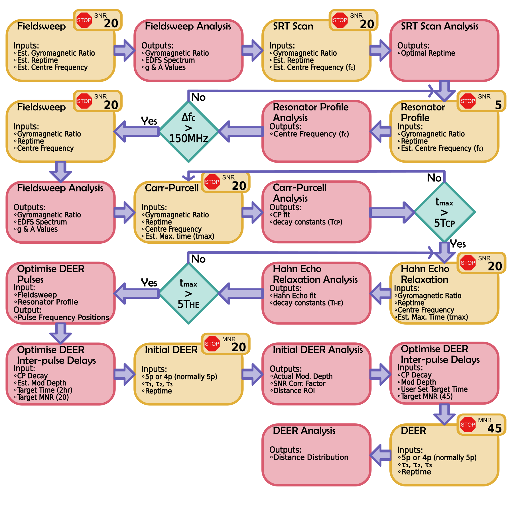

The Automated Algorithum#
When using the Graphical User Interface it is possible to use the full power of autoDEER by using the optimised automated algorithum. This has been developed to require minimal user input, and with a press of a button can measure the distance distribution of unknown sample.
Steps Explained#
1. User Inputs#
Before the algorithum can start the user must provide some details. The most important of these being the approximate resonator frequency. Additionally, the user should specify how much time they have and give a sample name. The user can also specify the labelling efficency if they know it is not 100%.
2. Fieldsweep#
The first experiment caried out is an Echo Detected Field Sweep (EDFS). This EDFS spectrum is then fitted and the fitter function will be used later in the optimisation of DEER pulses.
3. SRT Scan#
Now that an echo has been established, the next step is to optimise the shot repetition time (SRT). The SRT if optimised by running a Hahn Echo with increasing SRT, and a SRT is chose which allows for a 90% signal recovery.
4. Resonator Profile#
It is important to charecterise the frequency response of the resonator. This is need to clarify that the spectrum is located optimally. For rectangular pulsed experiments this can be used to identify the shortest possible pulse length, and for shaped and chirped pulses it can be used for resonator compensation. The profile is generated from a series of refocused echo nutation experiments, where the initial hard pulse is varied in length. The nutation profiles are carried out across a frequency range, the magnetic field is adjusted such that the system is always on resonance.
5. Relaxation Studies#
Relaxation studies are carried out by autoDEER primarily to identify the maximum inter-pulse delays for DEER experiments, but also to predict run times. All samples measure both a Hahn Echo decay and a Carr-Purcell 2 pulse echo decay. For 4pDEER only measurments a 2D refoucsed echo decay sequence needs to be measured to optimise the inter pulse delays.
6. Optimising DEER Sequence Parameters#
Now all the sample characterisation and setup experiments have been completed, we can now generate the optimised parameters for running an initial DEER measurement
Parameter#
Pulse Sequence: Unless the maximum \(\tau_{evo}\) is less than 1.5 :math:`mu`s, the algorithum will use a 5pDEER sequence. This is because 5pDEER nearly always gives a higher sensitivity than 4pDEER.
\(\tau_1\) and \(\tau_2\): These are calculated from the CP-decay or 2D refocused echo decay for the initial DEER or including the region of interest (ROI) for the final DEER.
dt: The step size for the time domain data is set to be either 16 ns or based from the region of interest (ROI) for the final DEER.
Pulse Shapes: If an AWG is avaliable, a Hyperbolic Secant (HS) pump pulse is used otherwise fully rectangular pulses are used.
7. Initial DEER Experiment#
An Initial 2-4 hour DEER measurement is carried out to determine the approximate distance distribution. This experiment is run until a SNR of 20 is reached. The distance distribution is then calculated using a model free appraoch and DeerLab. The distance distribution is then used to calculate the optimal \(\tau_{evo}\) for the final DEER experiment.
8. Final DEER Experiment#
Finally, the final DEER experiment is carried out. The \(\tau_{evo}\) comes from the ROI of the initial distance distribution unless it exceeds what can be achieved in the maximum time. Again the distance distribution is calculated using a model free appraoch and DeerLab.
Limitations#
At the moment the algorithum has only been designed to work on most common DEER experiments, so the following limitations apply:
Nitroxide Labeled Samples
Q Band